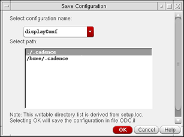

Managing Object Information Configuration
Once you have customized the information to be displayed for shapes and objects in information balloons and dynamic measurement, you can save the configuration, set it as the default configuration, and load and delete it as required.
Saving Display Information Configuration
To save the object display information configuration:
-
In the layout window, select Options – Dynamic Display.
The Dynamic Display form appears. -
Click Save on the Setup tab.
The Save Configuration form opens.
 - Type the name of the configuration in the Select configuration name field.
-
Choose the directory from the Select path field where you want to save the configuration.
The configuration is saved toodc.ilin the location of <selectedPath>/dfII/ODC/odc.il. The path where you choose to save the configuration determines the sequence in which a configuration is loaded and is derived from thesetup.locfile. - Click OK.
- Click OK or Apply.
Loading Display Information Configuration
To load a display information configuration:
- Open the Dynamic Display form.
- On the Setup tab, choose a configuration from the Configuration list.
- Click OK or Apply.
The order in which configuration files are loaded is determined by the Cadence Setup Search File mechanism (CSF). To find this information, CSF uses the setup.loc file. The setup.loc file is an ASCII file that specifies the locations to be searched and the order in which they should be searched.
Saving a Configuration as Default
To save a configuration as the default for object display information:
- Open the Dynamic Display form.
- On the Setup tab, choose a configuration from the Configuration list.
- Click the Default button.
- Click OK or Apply.
The configuration you choose as the default is loaded the next time you launch the application.
Deleting a Display Information Configuration
To delete an object display information configuration:
- Open the Dynamic Display form.
-
Click Delete on the Setup tab.
The Delete Configuration form displays.
- Select the configuration you want to delete, from the Configuration list.
- Click OK.
- Click OK or Apply.
Related Topics
Return to top